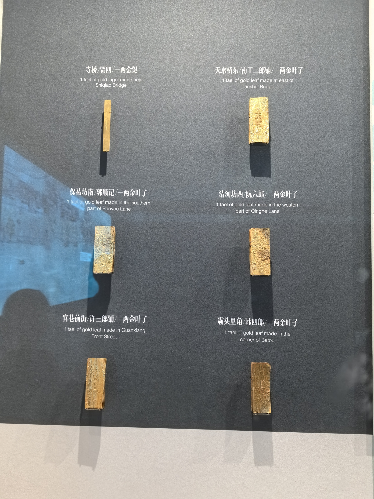

来了来了，钱塘江里捞上来的金叶子[看] 
忏悔录里没有后悔 只有愿赌服输的坦然[憨笑][OK]
我在黄金加工厂干过 用叉车 刺眼[捂脸]
你可知道，只要他活着，以后全网都没有人再去欺负他的女儿[赞]
很多人不明白，其实这个父亲是变相的公开告诉所有人：我会不顾一切保护我闺女。
我还以为吃人肉是指吸主母娘家的血霸占了钱财，结果真吃啊[九转大肠]
这也是为什么他娘在女主出生后要把她送出府，永远不让她回来的原因[疑问]
吃幼童？？她在擦血迹？？[衰][衰][衰]
这就能理解女主母亲这么狠心了，我本来还不理解什么苦衷能绝情到这个地步，我还是把女主父亲想善良了
我感觉男主查的那笔脏款的信息，就在岳父主动交给他的那画里
食材？？？？吕秀才吃人肉？？？？[衰][衰][衰]
我就说整个家最该死的就是那个男的
这个当年我看了，好几个月心情都不能平静！准妈妈叫郑琳！马上生了，遭遇飞来横祸！一家人都没了
第一句就留下了生性多疑的我
我20吃辣条喝可乐都得背着我妈
我记得摇一摇就是一直没去上学，直到粉丝和网友觉得不对劲，开始在视频下面说。 最开始说的时候她父母根本没管，后面发展成大面积的，她父母才带她去上学了[抠鼻]
瑶一瑶已经跟以前不一样了 瑶一瑶刚开始只有一两万粉丝的时候我就关注了 哪会儿是真的好可爱 现在…
怎么有点像瑶一瑶
有的10后是为记录生活教大家做美食才拍的，我知道的最好的10后博主是张颜颜，跟着她学会做了好多吃的
瑶一瑶[听歌]
读书是相对踏实的出路[流泪]
800米 6分10秒[憨笑]
为什么我跑的越慢，感觉越累[发呆]
不怕你们笑守丧的时候湖北人都在打麻将
终于体会到我爸听老歌的感觉了
?距离2018年已经7年了
非酋啥时候也热一把
这么多年还是老歌好听
初听还是纯情少女，再听已是夸克老兵[不看]
浪人琵琶我真觉得特别好听，我朋友说我古风小生[憨笑]
想当年我最喜欢听的就是空空如也和心如止水 [不失礼貌的微笑]
这歌我老师天天拿来练伦巴。[微笑]一听见就条件反射腿疼[流泪]
这比来财好听多了[微笑]
怎么突然就过了这么多年了
当年小小的老子最大的烦恼就是吃什么零食[憨笑]
17年吗？我还没上小学[憨笑]
这歌当年火的时候，我还是个初一小屁孩
我年轻的时候，你们死哪儿去了，现在快绝经了，到处都是帅哥[泣不成声][泣不成声][泣不成声]
一出门全是老头，刷视频全是帅哥，你们平时都走下水道吗？[捂脸]
按下f键,带你回到过去
这里面年羹尧虽然嚣张跋扈谁都不放在眼里，但是唯独对李卫确实够好不摆架子。
那个日本兵叫志村菊次郎，吃坏肚子拉肚子了
盲猜，打晕了然后被冰碴子扎死了
800 哈哈哈哈 我去给老师帮忙说好一天80 到手一天65 去问负责老师 告诉我 说我要交税[愉快]
5000才是纳税点
Read more: